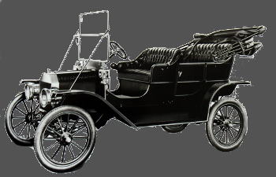
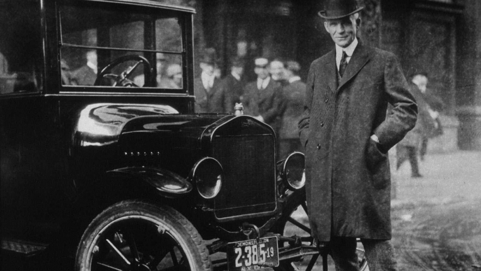

Henry Ford
A Tribute


Timeline of Henry Ford's life & achievments:
- Born: July 30th, 1863 in Greenfield Township, Michigan
- 1878: Gained reputation at age 15 of being a watch repairman
- 1879: Left home to work as an apprentice machinist in Detroit
- 1882: Returned home to work on farm and learned to operate the Westinghouse portable steam engine and later was hired to service steam engines
- 1891: Became engineer with the Edison Illuminating Company
- 1893: After a promotion to Chief Engineer he had enough time and money to devote attention to personal experiments with gasoline engines
- 1896: Created his first vehicle the Ford Quadricycle
- 1896: Attended a meeting of Edison executives and met Thomas Edison who encouraged him to continue with making automobiles
- 1898: Created a second automobile backed by the capital of Detroit lumber baron William Murphy
- 1899: Resigned from the Edison company and formed the Detroit Automobile Company
- 1901: Due to the expense and low quality of the vehicles the Detroid Automobile Company was dissolved
- 1901: With the help of C. Harold Wills, Ford designed, built and raced a 26 horsepower automobile
- 1901: Due to the success of the latest automobile the Henry Ford Company was formed with Henry as Chief Engineer
- 1902: Henry M. Leland was brought in as a consultant which prompted Henry to leave and the name of the company changed to Cadillan Automobile Company
- 1902: Ford teams up with racing cyclist Tom Cooper and produced the 80+ horsepower racer "999"
- 1902: Ford & Malcomson, Ltd. was formed to build an inexpesinve automobile but ran into trouble when the Dodge brothers demanded payment for their first shipment
- 1903: Ford Motor Company was formed with $28,000 capital and the Dodge brothers were convinced to accept a portion of the new company
- 1903: The "999" racer set a speed record on ice of 91.3 MPH and driven around country which made the Ford name popular
- 1908: Model T was introduced at a cost in today's dollars of $22,470
- 1913: Introduced moving assembly belts into his plants which greatly increased production
- 1914: Sales passed 250,000
- 1916: Sales reached 472,000 and price dropped to $7828 in today's dollars
- 1918: Half of all cars in America were Model Ts and were of color black
- 1927: The last of Model Ts were produced to make a total of 15,007,034
- 1927: The Ford Model A was introduced
- 1931: The last of the Model A was produced for a total of 4 million
- Died: April 7th, 1947 (aged 83) in Fair Lane, Dearborn, Michigan
Additional highlights:
- Henry was a pioneer of "welfare capitalism" designed to improve the lot of his workers and reducing heavy turnover. Offered a $5 per day wage.
- Ford introduced the reduced 5 day work week from 6.
- Henry started from being the most fierce opponent to labor unions and later appeared to embrace them.